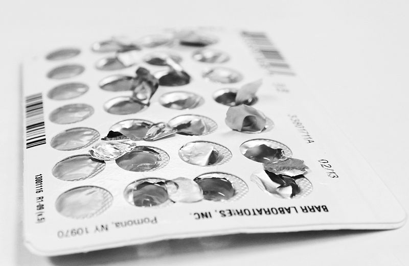
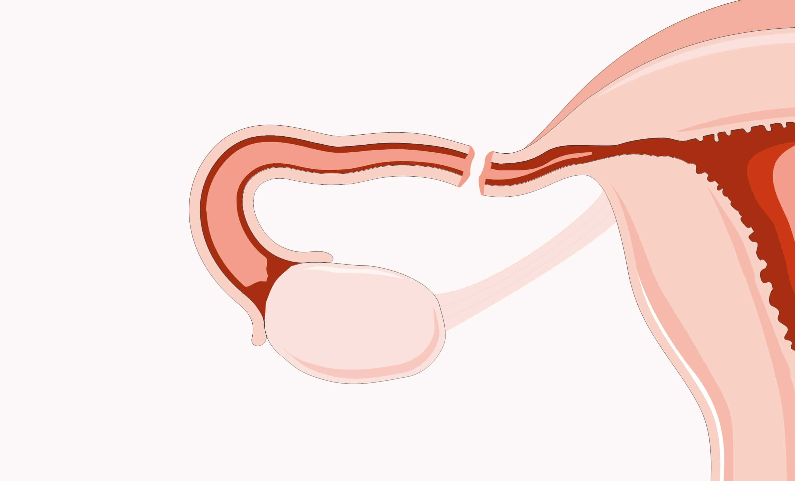

Métodos para el Control de la Natalidad
¿Qué es el control de la natalidad?
Es la que abarca cualquier actividad, medicamento o instrumento utilizado para prevenir el embarazo.
Existen varios tipos de métodos para controlar la natalidad para las mujeres que no desean quedar
en el estado del embarazo, la decisión sobre el método más adecuado debe tomarse junto con la pareja
y que se los recomiende el proveedor de atención médica.
Los métodos para control de la natalidad cada uno funciona de diferente manera para prevenir que
las mujeres que, embarazadas los cuales estos a mencionar son los siguientes:
- Crear una barrera que impida que los espermatozoides lleguen al ovulo.
- Matar los espermatozoides
- Impedir que los ovarios liberen óvulos.
- Alterar la mucosa cervical para impedir que los espermatozoides avancen hasta llegar al útero
- Alterar el tejido que recubre el útero de modo que el ovulo fertilizado no pueda implantarse.
¿Cuáles son los diferentes tipos de control de la natalidad?

Entre los métodos que no requieren receta médica se incluyen los siguientes:
- Abstinencia. No tener relaciones sexuales.- Espermicidas. Espumas o cremas que se aplican en la vagina para matar los espermatozoides. También brindan cierta protección contra las enfermedades de transmisión sexual. Esto es especialmente posible si se usan junto con un condón de látex.
- Condón masculino. Tubo delgado de látex o de algún material natural que se coloca recubriendo el pene. El esperma se deposita en el extremo del condón. Los condones de látex proporcionan cierta protección contra las enfermedades de transmisión sexual.
- Condones femeninos. Revestimiento de látex o de algún material natural que se coloca dentro de la vagina. Los condones de látex proporcionan cierta protección contra las enfermedades de transmisión sexual.
- Planificación familiar natural. Mantener relaciones los días en que la mujer es menos fértil, que se identifican empleando diferentes métodos para medir la temperatura del cuerpo. También implica observar los cambios de la mucosa cervical y utilizar instrumentos para predecir la fecha de la ovulación. La planificación natural, también llamada método del "ritmo", presenta un nivel de riesgo de embarazo alto.
Entre los métodos que requieren examen médico previo y receta se incluyen los siguientes:
- Anticonceptivos orales (píldoras para el control de la natalidad). Medicamentos de toma diaria que impiden la ovulación
controlando la secreción hormonal de la glándula pituitaria. En general, los anticonceptivos orales contienen las hormonas estrógeno y progestina.
Además de impedir el embarazo, los anticonceptivos orales tienen varios beneficios para los períodos menstruales.
Esto puede ayudar a aumentar las reservas de hierro en el caso usar anticonceptivos orales es la prevención de determinados cánceres de ovario
y cancerosas de las mamas que suceden con menor frecuencia entre mujeres que utilizan quísticos. Estudios recientes también sugieren que el uso de
anticonceptivos orales puede
- Minipíldora. A diferencia de la píldora anticonceptiva tradicional, la minipíldora contiene solo una hormona, la progestina.
Si se toma a diario, la minipíldora engrosa la mucosa cervical y evita que los espermatozoides lleguen al óvulo. La minipíldora
- Implante. Una cápsula que contiene la hormona sintética etonogestrel se implanta debajo de la piel, en la parte superior del brazo de la mujer.
Impide de manera continua que los ovarios liberen óvulos durante un plazo de hasta tres años. Para insertar y retirar la cápsula es necesario administrar anestesia.
- Inyección. Se administra una droga similar a la progesterona mediante una inyección para impedir el embarazo mediante la detención de la ovulación.
El efecto dura aproximadamente tres meses, y luego debe aplicarse una nueva inyección para continuar controlando la natalidad con eficiencia.
- Parche. Parche para la piel que se usa en el cuerpo y libera hormonas estrógeno y progestina al torrente sanguíneo.
Tiene mayor eficacia en mujeres que pesan menos de 198 libras.
- Diafragma o capuchón cervical. Taza de caucho de forma convexa y con un borde flexible que se introduce a través de la vagina
y cubre el cuello del útero. Este dispositivo de control de la natalidad debe insertarse antes de la relación sexual.
- Anillo anticonceptivo hormonal vaginal. Anillo que se coloca dentro de la vagina,
alrededor del cuello uterino. El anillo libera las hormonas estrógeno y progestina.
- Dispositivo intrauterino (DIU). Dispositivo que se coloca dentro del útero a través del cuello uterino
Debe colocarlo un proveedor de atención médica. La función del DIU es engrosar el mucus cervical para dificultar
que el esperma ingrese al cuello uterino. O impedir que el óvulo fertilizado se implante en la pared del útero.
Los DIU que contienen hormonas también se denominan "sistemas intrauterinos"
y deben reemplazarse cada cinco años, mientras que los IUD de cobre pueden durar hasta 10 años.
Las cirugías que provocan la imposibilidad de quedar embarazada incluyen las siguientes:
- Histerectomía. Extracción del útero y usualmente de los ovarios y las trompas de Falopio. Esta es una forma de control de la natalidad permanente.
- Ligadura de trompas u oclusión de trompas ("atadura de trompas"). Cirugía para cortar, cauterizar o ligar las trompas de Falopio para
impedir que los óvulos lleguen al útero. El ligado de trompas se diseñó como método definitivo de control de la natalidad. Si bien es posible
revertir algunos tipos de ligados, el procedimiento puede no tener éxito.
- Método Essure o de obstrucción tubárica. Este método de control de natalidad permanente puede realizarse como procedimiento
ambulatorio sin incisión quirúrgica. Durante el procedimiento, se utiliza un tubo delgado para insertar un instrumento pequeño
tipo resorte a través de la vagina y el útero dentro de cada trompa de Falopio. El instrumento posee un material que hace que se
desarrolle tejido cicatricial. Este tejido bloquea las trompas en forma permanente después de unos tres meses. Durante ese tiempo,
pueden utilizarse otras formas de control de natalidad. Debe realizarse una radiografía o ecografía para confirmar que las trompas están bloqueadas.
- Vasectomía. Corte o sujeción de los conductos (vas deferens) que transportan el esperma desde los testículos.
Los testículos siguen produciendo espermatozoides, pero estos mueren y son absorbidos por el cuerpo.
Métodos sugeridos como preventivos pero los cuales representan un gran riesgo de embarazo son los siguientes:

- Retirar el pene de la vagina antes de eyacular.
- Mantener relaciones sexuales durante el periodo de la menstruación.
- Ponerse de pie rápidamente(inmediatamente) luego de terminar una relación sexual.
- Tomar una ducha vaginal luego de terminar una relación sexual.